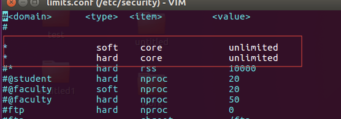
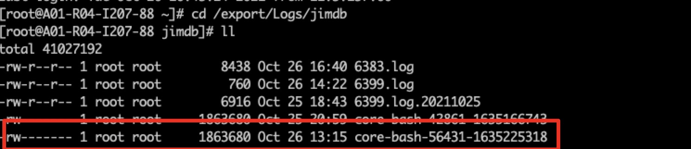

linux：永久打开core文件功能
在Linux下程序不寻常退出时，内核会在当前工作目录下生成一个core文件（是一个内存映像，同时加上调试信息）。使用gdb来查看core文件，可以指示出导致程序出错的代码所在文件和行数。
注： 1. 当然首先编译时要带上gdb信息
下面说一下永久打开生成Core文件的步骤：
1、设置core文件的大小不受限制。
ulimit -c unlimited
2、ulimit -c校验是否设置成功（如果是0，说明生成core文件开关为关闭）
[root@A03-R05-I115-53-5254972 jimdb]# ulimit -c
Unlimited
3、【重要！！】打开 /etc/security/limits.conf文件（使ulimit -c ulimited 设置永久生效）
vi /etc/security/limits.conf
添加红框中两行：
* soft core unlimited
* hard core unlimited

用命令修改的方式：
echo "* soft core unlimited" >> /etc/security/limits.conf
echo "* hard core unlimited" >> /etc/security/limits.conf
4、【重要！！】创建存放 core文件的文件夹 (确认应用有写的权限）
mkdir /export/Logs/jimdb
5、设置生成 core文件的名称和生成路径（以下两种方式任选一种，哪种生效与系统有关）
方式一： 修改/proc/sys/kernel/core_pattern和/proc/sys/kernel/core_uses_pid
echo "/export/Logs/jimdb/core-%e-%p-%t" > /proc/sys/kernel/core_pattern
echo "1" > /proc/sys/kernel/core_uses_pid
（core_pattern文件名为core-命令名-pid-时间戳）
(kernel.core_uses_pid控制core文件的文件名中是否添加pid作为扩展,文件内容为1，表示添加pid作为扩展名，生成的core文件格式为core.xxxx；为0则表示生成的core文件同一命名为core)
以下是参数列表:
%p - insert pid into filename 添加pid
%u - insert current uid into filename 添加当前uid
%g - insert current gid into filename 添加当前gid
%s - insert signal that caused the coredump into the filename 添加导致产生core的信号
%t - insert UNIX time that the coredump occurred into filename 添加core文件生成时的unix时间
%h - insert hostname where the coredump happened into filename 添加主机名
%e - insert coredumping executable name into filename 添加命令名
方式二：修改/etc/sysctl.conf
sysctl -w "kernel.core_pattern=/export/Logs/jimdb/core-%e-%p-%t" >>/etc/sysctl.conf
sysctl -w "kernel.core_uses_pid=1" >>/etc/sysctl.conf
sysctl -p (查看生效参数，验证设置是否生效)
5、快速验证是否能生成core文件
kill -s SIGSEGV $$
6、验证是否生效
1）再次登录机器，查看/export/Logs/jimdb目录下有core-bash的文件

2）ulimit -c校验设置是否依然是Unlimited（如果是0，说明生成core文件开关为关闭）
[root@A03-R05-I115-53-5254972 jimdb]# ulimit -c
Unlimited


【推荐】园子的商务合作：欢迎下载《泛智能开启下一代云时代》白皮书
【推荐】阿里云-云服务器省钱攻略 ：五种权益，限时发放，不容错过
· 记一次 .NET 某电力系统 内存暴涨分析
· 记一次 Redisson 线上问题
· 从事软件开发工作的一些感悟
· 优化接口设计的思路系列：接口用户上下文的设计与实现
· 10分钟理解契约测试及如何在 C# 中实现
· JDK21来了！附重要更新说明
· 记一次 .NET 某电力系统 内存暴涨分析
· 深度比较常见库中序列化和反序列化性能的性能差异
· .NET 8 的 green thread 异步模型被搁置了
· 上周热点回顾（9.11-9.17）